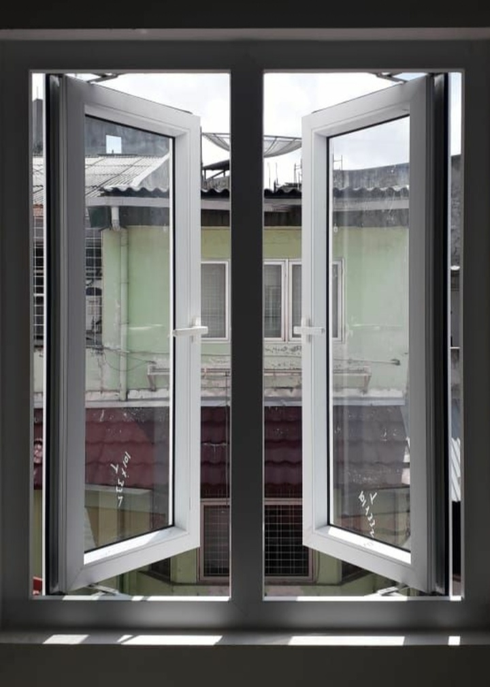
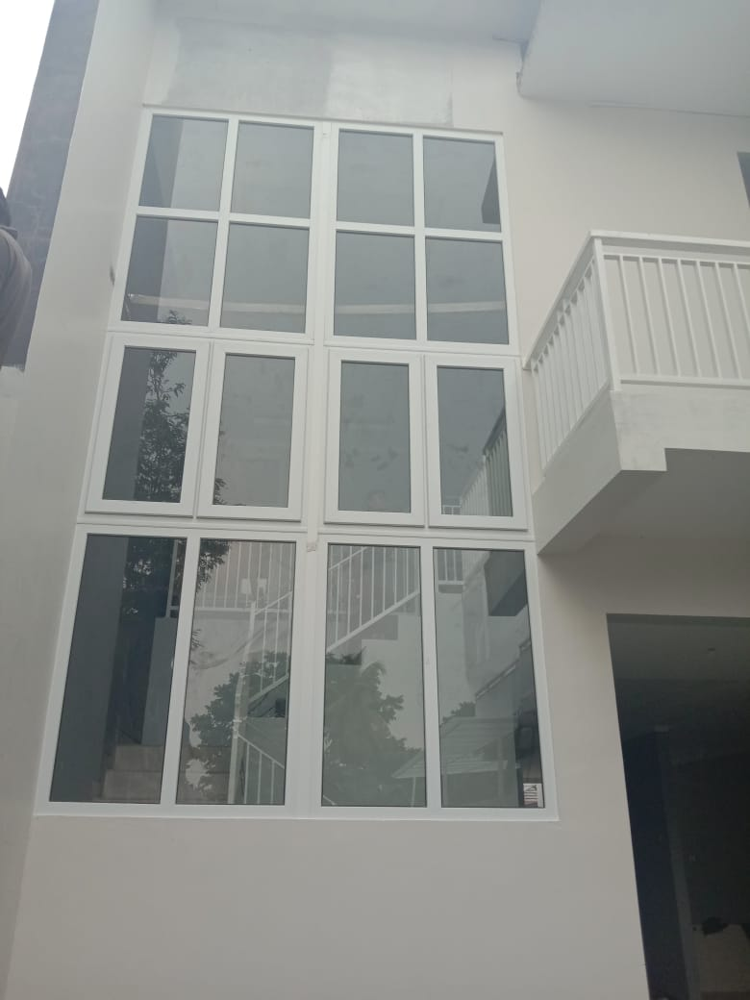

Hemat ruang ayun
Jendela sliding UPVC hemat ruang ketika sisi bukaan terbatas; jalur geser tetap memerlukan ruang dan pembersihan.
Jendela UPVC sliding, juga disebut jendela geser, memiliki daun yang bergerak menyamping pada jalur. Karena tidak membutuhkan ayunan daun seperti model casement, jenis ini dapat dipertimbangkan saat ruang di dekat jendela perlu tetap lega. Namun, jalur, susunan daun, lebar bukaan, serta cara membersihkan tetap harus diperhitungkan. Gunakan panduan ini untuk menyusun kebutuhan awal, lalu tentukan ukuran dan pilihan akhir melalui konsultasi serta pengukuran lokasi.

Daun digeser untuk membuka sebagian area; jumlah panel bergerak dan arah geser mengikuti konfigurasi. Tentukan kebutuhan ventilasi, posisi pegangan, serta akses membersihkan kaca.
Pertimbangkan ruang, bukaan, dan akses perawatan saat memilih model.
Jendela sliding UPVC hemat ruang ketika sisi bukaan terbatas; jalur geser tetap memerlukan ruang dan pembersihan.
Daun bergeser untuk membuka sebagian area sesuai susunan dan konfigurasi jendela.
Gerak menyamping menghindari ayunan daun, dengan akses pegangan dan jalur tetap perlu diperhitungkan.
Jendela sliding dapat dipertimbangkan di kamar, ruang keluarga, dapur, atau ruang kerja bila bukaan mendukung. Untuk posisi tinggi, rencanakan akses pembersihan dan perlindungan yang aman.
Kaca, warna, finishing, jumlah daun, pegangan, dan pengunci mengikuti ketersediaan konfigurasi. Minta spesifikasi aktual tertulis; halaman ini tidak mencantumkan data teknis yang belum terverifikasi.
Rincian produk mengikuti ukuran lokasi dan opsi yang tersedia saat penawaran.
| Aspek | Informasi |
|---|---|
| Mekanisme | Daun bergeser menyamping pada jalur; bukaan mengikuti susunan daun. |
| Ukuran | Ditentukan melalui pengukuran lapangan dan dicatat pada penawaran. |
| Warna / finishing | Pilihan aktual dikonfirmasi saat konsultasi. |
| Kaca | Jenis dan susunan mengikuti konfigurasi pesanan. |
| Aksesori | Pegangan dan pengunci mengikuti konfigurasi yang disepakati. |
Gunakan pegangan perlahan, jaga jalur bebas dari benda, dan jangan menekan kaca atau memaksa daun yang tertahan. Awasi anak-anak dan konfirmasikan pembatas atau pengunci tambahan sebelum memesan.
Jendela sliding bergerak menyamping pada jalur, sementara casement membuka dengan ayunan daun. Sliding tidak memerlukan ruang ayun tetapi perlu jalur dan akses perawatan. Casement memberi bukaan dengan daun berengsel, sehingga ruang di sekitarnya harus diperhatikan. Jendela fixed tidak dapat dibuka dan digunakan ketika bukaan operasional tidak diperlukan. Masing-masing harus dipilih berdasarkan fungsi, akses, dan rancangan lokasi.
Tabel ini membandingkan mekanisme, bukan performa. Kaca, ukuran, perangkat, dan pemasangan memengaruhi hasil; bahas kebutuhan ventilasi serta akses saat survei.
| Model | Cara kerja | Pertimbangan utama |
|---|---|---|
| Sliding | Daun bergeser pada jalur | Akses ke jalur dan sisi kaca |
| Casement | Daun berayun pada engsel | Ruang ayun dan arah bukaan |
| Fixed | Bidang kaca tidak dibuka | Ventilasi dan akses pembersihan |
Foto berikut memperlihatkan contoh tampilan produk dan model pembanding. Konfigurasi aktual dapat berbeda.


Rincian produk dan pekerjaan dikonfirmasi bersama sebelum pesanan diproses.
Ceritakan fungsi ruang, lokasi, perkiraan ukuran, dan tampilan yang diinginkan. Foto lokasi membantu pembicaraan awal, tetapi tidak menggantikan pengukuran.
Jadwalkan pemeriksaan bukaan untuk mencatat ukuran aktual, kondisi dinding atau lantai, arah bukaan, serta akses kerja.
Tinjau rincian ukuran, konfigurasi, kaca, perangkat, harga, cakupan pekerjaan, dan jadwal. Minta semua kesepakatan dicantumkan sebelum persetujuan.
Setelah rincian dan jadwal disetujui, proses dilanjutkan sesuai kesepakatan. Periksa hasil pemasangan bersama tim dan simpan panduan perawatan yang diberikan.
Detail ukuran, warna, jenis kaca, perangkat, harga, ketersediaan, garansi, dan jadwal dapat berubah menurut pesanan. Konfirmasikan semua data melalui survei serta penawaran tertulis sebelum persetujuan atau produksi. Jangan menggunakan ukuran pada foto sebagai ukuran produksi.
Periksa ukuran bukaan, arah dan jumlah daun bergerak, kebutuhan ventilasi, akses pegangan, serta jalur pembersihan. Konfirmasikan jenis kaca dan perangkat saat konsultasi. Ukuran akhir ditentukan setelah pengukuran lokasi, bukan dari foto produk.
Model ini dapat dipertimbangkan jika ukuran bukaan, kebutuhan ventilasi, privasi, dan akses sesuai. Perhatikan tirai serta posisi furnitur agar tidak menghalangi pegangan. Tim perlu memeriksa kondisi ruang sebelum merekomendasikan konfigurasi.
Kaca, warna, finishing, jumlah daun, dan perangkat mengikuti konfigurasi serta ketersediaan ketika dipesan. Minta daftar pilihan yang aktual dan catat jenis kaca serta pengunci pada penawaran. Halaman ini tidak menetapkan opsi yang belum diverifikasi.
Bersihkan permukaan dengan kain lembut dan pembersih ringan, lalu singkirkan debu dari jalur secara berkala. Jangan mengorek dengan benda tajam atau menggunakan pelumas sembarang. Jika gerakan seret atau pengunci bermasalah, hentikan pemaksaan dan minta pemeriksaan.
Ukuran mengikuti kondisi bukaan dan konfigurasi yang dapat diproduksi. Sampaikan ukuran perkiraan, lalu jadwalkan survei agar tim mengukur kondisi aktual dan membahas jumlah daun serta arah geser sebelum penawaran disetujui.
Bandingkan model dan kategori sebelum menentukan konfigurasi.
Kirim pertanyaan dan rencanakan survei melalui WhatsApp.